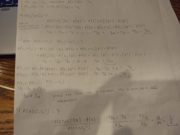
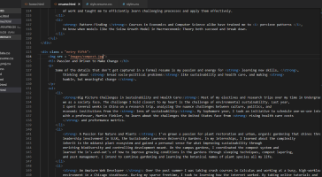
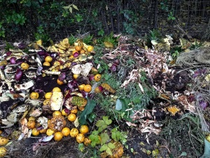

Applied Data Analytics
Through passion projects, courses in data-scientific programming and econometrics, and self-study, I've built
up my technical arsenal of tools for data exploration, visualization, and analysis.
-
Modeling : Having taking the most advanced form of Econometrics at Lawrence, coupled with courses in the
Mathematics department for Statistical Modeling and Probability Theory, I have built up a deep understanding for the
assumptions, conditions, and workflow for building and implementing models to test data, including Partial-Effects, Logistic,
IV, and Time Series Analysis.
-
Statistical Software (R, Stata, SQL) : My coursework in Econometrics and Statistical Programming has offered me
many opportunities to preform my own case studies and explore questions of my own interest. Part of these projects were
the endless amount of googling and self-learning I needed to complete to familiarize myself with Stata commands, R packages
ranging from the Tidyverse, karat, and Shiny. Over time, I am continuing to grow my abilities in various ways: in
spatial data visualization, interactive dashboard building, and time-saving function-writing.
-
Story-Telling : Akin to my liberal arts degree, I have developed skills in writing effectively
and concisely. I feel that telling a clear story with the data I'm working with is one of the most important parts, and so
I am continuing to make strides in writing better essays in my class electives and making cleaner and more
enjoyable reads out of my passion project reports.

Computer Science and Problem-Solving
One of the key features of my history that I feel will distinguish me from other Economics majors you may find
on the resume review process is that I have gone at lengths into mathematics, computer science, and liberal arts electives
that have built me a strong foundation for quickly learning new tools and software, following logic, and training me for the
role of a problem-solver.
-
Computer Science Coursework: I have completed coursework in Java programming and Data Structures in C++,
giving me a wealth of experience in dealing with hands-on problems that require building classes, objects, and
a strong command of logic flows and data structures. This has streamlined my efficiency in learning
new technologies (like Python, which I'm excited to learn as soon as possible!) and gives me a strong foundation
in programming.
-
Rigor-Trained and Attention to Detail: Completing the Calculus sequence and Computer Science sequence around my
last year of undergraduate was no easy feat, nonetheless with self-projects in learning to build websites like this one from scratch,
and my senior Economics capstone and research project. Going through with these courses have trained me for long hours
of work and taught me to efficiently learn challenging processes and apply them effectively.
-
Pattern-Finding : Courses in Economics and Computer Science alike have trained me to percieve patterns ,
to know when models like the Solow Growth Model in Macroeconomic Theory both succeed and break down.

Passion and Driven to Make Change
Some of the details that don't get captured in a formal resume is my passion and energy for learning new skills, ,
thinking about broad socio-political problems like sustainability and health care, and making
humble, but meaningful change .
-
Big Picture Challenges in Sustainability and Health Care: Most of my electives and research trips over my time in Undergrad have been focused on bigger, broader challenges that
we as a society face. The challenge I hold closest to my heart is the challenge of environmental sustainability. Last year,
I spent several weeks in China on a research trip, analyzing the nuance challenges between culture, politics, and
economic institutions from the lens of sustainability. My Sophomore year, I took an initiative to schedule one-on-one interviews
with a professor, Martin Finkler, to learn about the challenges the United States face from rising health care costs
and preformance metrics.
-
A Passion for Nature and Plants : I've grown a passion for plant restoration and urban, organic gardening that shines through in my summer internships and
leadership involvement in SLUG, the Sustainable Lawrence University Gardens. In my internships, I learned about the complexity
inherit in the midwest plant ecosystem and gained a personal sense for what improving sustainability through
enriching biodiversity and controlling development meant. On the campus gardens, I coordinated the compost system and
learned the in's-and-out's of how to improve growing conditions in the gardens through sleeping techniques, compost layering,
and pest management. I intend to continue gardening and learning the botanical names of plant species all my life.
-
An Amature Web Developer : Over the past summer I was taking crash courses in Calculus and working at a busy, high-workload
environment in a Chicago steakhouse. During my sparse freetime, I took to learning how the internet worked. By taking online tutorials and
learning a little HTML/CSS, I began on this website which I hope stands as a testament to my self-guided work ethic, curiosity, and willingness to
suffer through the challenges of learning new skills (positioning elements was quite a learning curve!) to make a quality product to show off in the end.